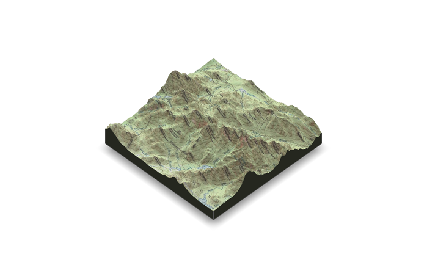

spacey is a package designed to make it trivial to produce beautiful rayshader maps for locations in the United States, letting you easily obtain and combine USGS and ESRI map data into 2D and 3D images. This vignette will walk through the basic utilities in spacey and their expected uses.
First, let’s load our package:
library(spacey)
The most comprehensive command in spacey is automap, which only requires two vectors, one for latitude and one for longitude1, in order to quickly generate a rayshader image. In fact, you can use as little as a single coordinate pair:
example_map <- automap(44.121268, -73.903734) example_map

And it isn’t much harder to add overlays of satellite imagery:
example_map$update_values(overlay = "World_Imagery") example_map

Or turn those into 3D visuals:
example_map$update_values(method = "3d") example_map

In addition, automap supports parallelization with future straight out of the box to speed up map generation – just call future::plan("multisession") (or whatever plan you prefer) before automap to run the different rayshading processes in parallel, notably speeding up the whole map generation process.
All of the elevation and imagery data pulled by this package comes via the USGS National Map API, with the satellite imagery in particular coming via ESRI’s MapServer API. If you want to save these off as files (so that you can work on your maps without an Internet connection, or archive the data used), use the get_heightmap() and get_image_overlay() functions:
bounding_box <- get_centroid_bounding_box(c(lat = 44.121268, lng = -73.903734), distance = 10) heightmap <- get_heightmap(bounding_box, save.tif = TRUE, tif.filename = "out.tif") overlay <- get_image_overlay(bounding_box, save.png = TRUE, png.filename = "out.png")
You can then use load_heightmap and load_overlay functions to load those files into your session, and then provide the arrays to the heightmap and texture arguments of automap.
saved_map <- automap(heightmap = heightmap, texture = overlay)
The automap function can be customized in dozens of ways to quickly iterate on maps, changing the specified overlays, terrain heights, color shading, and more. To tweak individual values used in calculating your map, use the update_values() function attached to your map objects to only refresh components which will change as a result:
tictoc::tic() example_map$update_values(overlay = "USA_Topo_Maps") example_map tictoc::toc() #> 8.821 sec elapsed

If you only want to access the USGS and ESRI APIs, there’s no need to use the automap function at all. Instead, you can use the get_heightmap and get_image_overlay functions to accomplish a similar effect.
The largest difference with these functions (other than their return objects) is that they expect a bounding box for your map, while automap will calculate one for you based on the spatial extent of your input data and any value you pass to its distance argument. The bounding box needs to be a list containing coordinates for the lower left and upper right corners of your data (as two separate list elements) – you can either provide these yourself, or use one of the two functions provided by spacey to do it for you!
The first of these functions is get_centroid_bounding_box, which is what automap uses to find the bounding box for a single coordinate pair. Just provide a named vector with latitude and longitude for the center of your map, alongside the distance you want your map to span (from the central location to any corner):
get_centroid_bounding_box(c( "lat" = 44.121268, "lng" = -73.903734 ), distance = 10 ) #> $bl #> lat lng #> 44.05771 -73.99212 #> #> $tr #> lat lng #> 44.18475 -73.81515
If you have more than just a single coordinate pair, you’re still able to get a bounding box for your data via get_coord_bounding_box – just pass it vectors containing your latitude and longitude data:
df <- data.frame( lat = c(44.05771, 44.18475), lng = c(-73.99212, -73.81515) ) get_coord_bounding_box(df$lat, df$lng) #> $bl #> lat lng #> 44.05771 -73.99212 #> #> $tr #> lat lng #> 44.18475 -73.81515
You can also still take advantage of expanding the map to a certain distance from your data’s central point by finding the centroid for your dataset – using get_centroid – and then passing that as the first argument to get_centroid_bounding_box:
get_centroid(df$lat, df$lng) #> lat lng #> 44.12126 -73.90373 get_centroid_bounding_box(get_centroid(df$lat, df$lng), 10) #> $bl #> lat lng #> 44.05771 -73.99212 #> #> $tr #> lat lng #> 44.18475 -73.81515
All of these functions also have the option to work with (and return) data in radians by setting coord.unit = "radians"; the default, however, is decimal degrees. Functions which take distance arguments also have a dist.unit argument, which can be used to provide distances in "km" (the default), "miles", "m" (for meters), or "ft". Note that the conversions between these units are imperfect, so use km if precision is needed.
No matter which method you use, that bounding box can then be passed to get_heightmap to obtain USGS elevation data for your area of interest, or get_image_overlay to obtain satellite images:
bbox <- get_centroid_bounding_box(c("lat" = 44.121268, "lng" = -73.903734), distance = 10) heightmap <- get_heightmap(bbox)
Both of these functions also provide options to save the downloaded imagery to file – either using save.tif in get_heightmap or save.png in get_image_overlay. You can then load these images back into an R session using the load_heightmap or load_overlay functions, respectively, which will create objects ready to be used for mapping with rayshader.
My guess is that most people who use spacey will eventually move on to carefully designing their output maps, since you’re able to control things with much more granularity using the core rayshader functions than you are with spacey. However, the data import functions and quick iteration provided by spacey will hopefully help you get started with making these beautiful maps, letting you spend less time fighting with data and more time communicating your landscape to your audience.
Miscellania
In addition to these main functions, spacey implements basic functions for converting radians to degrees (via the function rad_to_deg) and back again (via deg_to_rad), which may be of some use. Note that these conversions are done simply and will incur some error from floating point arithmetic.
It should be noted that spacey really isn’t a geospatial processing library, and these commands are built to be exactly as accurate as needed by core package functions. For that reason, you probably shouldn’t rely upon get_centroid or get_*_bounding_box for points near extreme latitudes or longitudes, as there are no adjustments built in to deal with these locations, since the USGS data spacey is designed to work with doesn’t really wrap those.
Acknowledgements
rayshader, which powers the maps coming out of automap, was built by Tyler Morgan-Wall, and can be extended far beyond what I’ve done here – check out its main website.
The USGS and ESRI query code has its roots in Will Bishop’s fantastic essay on using rayshader.